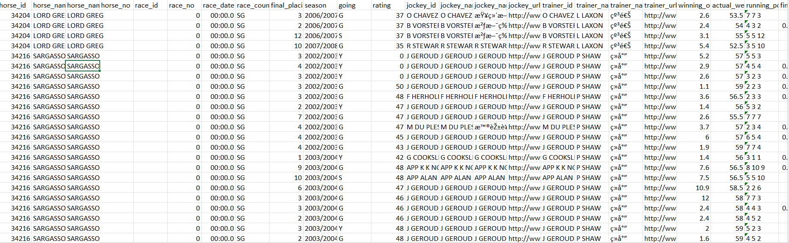
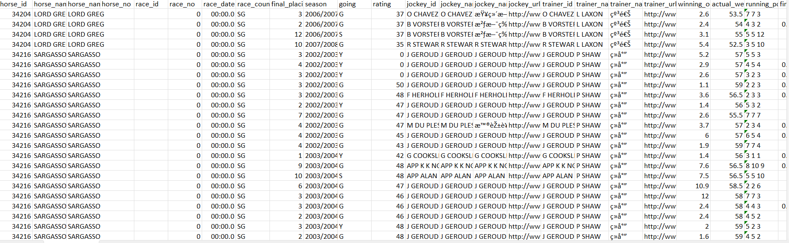
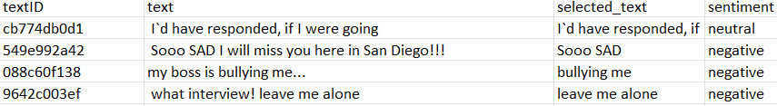

Data Gathering
For this project I will be using 3 primary data sources: HJKC data found via GitHub, Tweet Sentiment data found via GitHub, and Tweets relating to HKJC’s most recent horse of the year, Golden Sixty.
The first data source, raw HJKC data from 1979 to 2018 found on GitHub, will serve as the primary source of our analysis. This data source will be used to compile data on individual horses and races in order to try and see if we can pin down what features most heavily play into racing performance and if we can make worthwhile predictions for races.
The second data source, Twitter Sentiment data, was found with the intentions of creating a text classfication model that is able to label the sentiment of a tweet as positive, negative, or neutral. This classficiation model will be made with the intentions of being able to measure the sentiment on Twitter surrounding particular horses, races, and/or events in the HJKC.
The third data source, tweets relating to HKJC’s most recent horse of the year, Golden Sixty, is pulled from Twitter’s API which I had to pay for (Thanks, Elon). I will touch more on that later in this section.
HKJC Horses and Performance Data
While the HKJC offers publicly available data, it is immensely hard to scrape off the web. This web scraping was orginally attempted for this project (for, admittedly, too long of a period of a time), but it requires writing code to solve logic and math games set up by the HJKC which change with time. They do not mind people using their data, but they do no want an oversaturation of users using their data. There are many companies that offer up-to-date HJKC data for a monthly subscription, but this is, obviously, not worthwhile for this project. Outside of this paid data and running an extremely complicated API (that is often very sensitive to breaking day-to-day), there is an extremely limited pool of data that is free and easy-to-use. For reference as to how complex the API for HKJC data is, see a past project completed by GitHub user Christy-Lo. This exact API is the only publicly available code for an HJKC API that could be found on the internet, and even if one follows the code line-by-line, HKJC’s logic and math games have changed, so this API code is ony somewhat salvageable. Again, I figured such coding to be out of the scope of this project.
Upon scouring the web, I (almost accidentally) stumbled upon a user on GitHub by the username eprochasson who actually used to manage a public, web scraper for Hong Kong and Singapore horse racing. The user has not updated the data obtained from this scraper since 2019, but due to horse racing not really changing as a sport year-to-year (unlike sports like basketball, baseball, etc.), the receny of this data is more than suffcient for this project. The GitHub containing all this data can, once again, be found here.
On this GitHub site, there are 6 different datasets that can accessed: dividends, horses, live_odds, performances, races, and sectional times. The divideneds and live odds datasets will be not be focused on in this project. Horses and performances will serve as the main sources of data for this project. The data dates backs all the way back to 1979 and goes up until 2018-06-27. The horses dataset contains information on every horse that is raced in Hong Kong and Singapore, including information about their owners, jockey, its dame and sire (mother and father), and siblings. There are over 20,0000 observations (horses) in this dataset. There are overall 26 features in this dataset.
A screenshot of the horses csv file (once it is unzipped from the gz file), can be found below: 
The performances dataset captures every single performance by each of the horses in the horses dataset (with each row representing a horse’s performance in a race). Because of this relationship between the datasets, there are almost 400,000 observations in this datset. The datset captures 26 features, including horse attributes, the placement of the horse in the race, its starting draw, race distance/conditions, and data relating to how it ran all 4 sections of the track.
A screenshot of the performances csv file (once it is unzipped from the gz file), can be found below: 
As we proceed through analyses in subsequent sections, as we begin to explore all the various features of these datasets, more descriptive explanations of the features will be provided on an as-needed basis.
Twitter Data for Sentiment Analysis
I found a solid labeled dataset for tweets on Kaggle that contains over 27,000 tweets with a sentiment label that either reads “positive”, “negative”, or “neutral”.
A screenshot of the csv file can be found below. 
Tweets relating to HKJC’s most recent horse of the year, Golden Sixty
Using the Twitter API, I was able to pull in the data of 100 tweets relating to the HKJC horse, Golden Sixty (that is the limit with the API developer plan I bought). It is my intention to this text data as additional unseen data for sentiment classifier. I did not want to just create a tweet sentiment analysis classifier for no reason; I wanted to be able to show that there is indeed applicability of tweet classification to this topic area.
Now, the reason I went out of my way to buy the API (as the free version does not let you pull in tweets anymore due to recent policy changes by Mr. Musk at Twitter cough sorry, X.) was that I was not able to incorporate an R API into this project due to the computational limitations of solving the logic games set up by HKJC. I wanted to especially show that I did not include an R API out of laziness or nonchalance towards this project, but really because it is geniunely hard to get that API set up. This Twitter API was really the only other API I could think of that would have applicability to this project. I had orginally tried sentiment analysis of the news, but I ran into trouble with that, especially due to the lack of accessibility to HJKC news not on Twitter. I shelled out some money to get this API up and going to show my commitmment to this project.
Next Steps
Next steps after collecting this data will be to be clean this data for the analyses that are completed under this project.